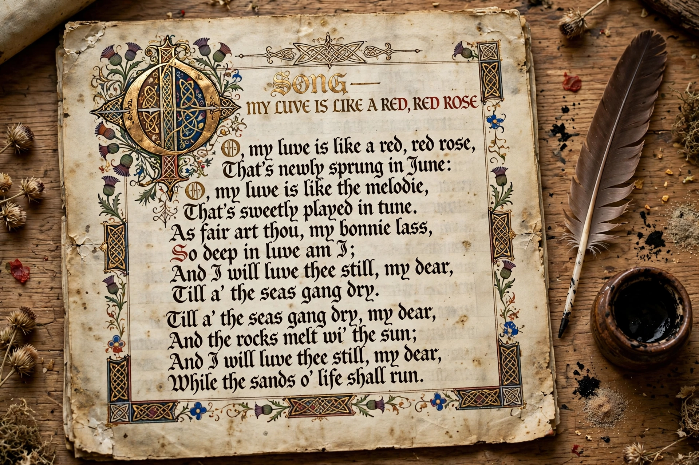

A makar (Scots: [ˈmakər]; plural makaris) is a term from Scottish literature for a poet or bard, in modern usage chiefly applied to the great court poets of Renaissance Scotland, who wrote in Middle Scots during the 15th and early 16th centuries. The word literally means "maker" — the poet as craftsman.
The outstanding makars include Robert Henryson, author of the Testament of Cresseid and the Morall Fabillis; William Dunbar, the most versatile of the group; Gavin Douglas, whose Eneados (1513) was the first complete translation of Virgil's Aeneid into a Germanic language; and Sir David Lyndsay, author of Ane Satyre of the Thrie Estaitis. Their patron was the court of James IV of Scotland.
The makars wrote in a highly literary Middle Scots, influenced by Chaucer — hence their alternative label, the "Scottish Chaucerians" — employing aureate diction, dream visions, complaint, flyting, and moral fable. After the Union of the Crowns (1603) removed the royal court to London, the tradition declined.
Today "The Makar" is the title of Scotland's national poet; the post was created in 2004, first held by Edwin Morgan, and the city of Edinburgh also appoints its own Makar.